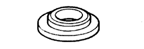

Timing Gear Case or Timing Chain Case Oil Seal (2GR-FE) Preparation [Installation]
| 09213-70011 | Crankshaft Pulley Holding Tool | |
 | (09213-70020) | Bolt |
 | 09223-22010 | Crankshaft Front Oil Seal Replacer |
 | 09330-00021 | Companion Flange Holding Tool |
 | 09506-35010 | Differential Drive Pinion Rear Bearing Replacer |
 | QL-280N | QL Torque Wrench (280N) Supplied by Banzai Ltd. and Iyasaka Co., Ltd. |